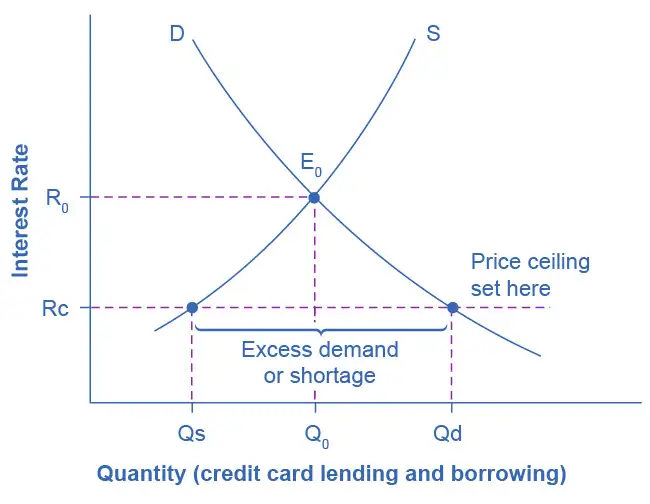
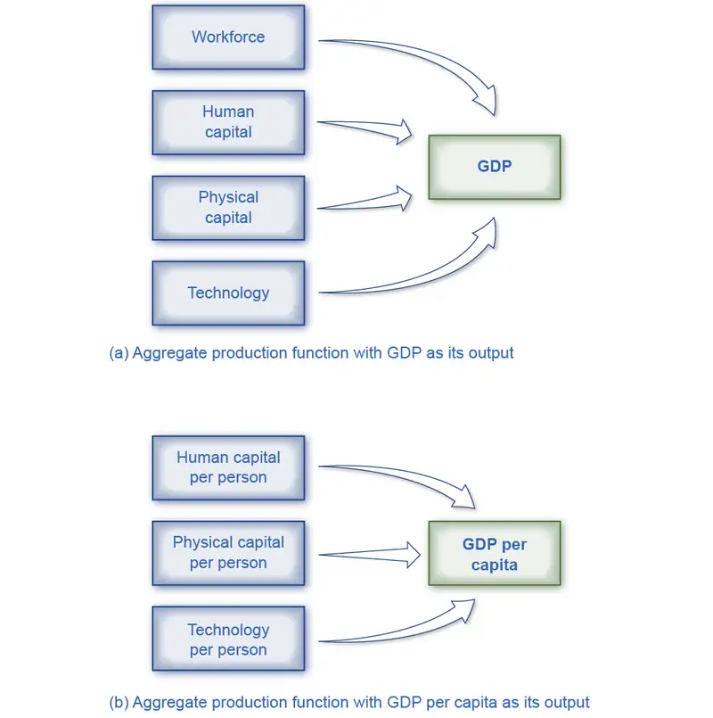

Preface¶
Welcome to Principles of Economics 3e (Third Edition), an OpenStax resource. This textbook was written to increase student access to high-quality learning materials, maintaining highest standards of academic rigor at little to no cost.
About OpenStax¶
OpenStax is part of Rice University, which is a 501(c)(3) nonprofit charitable corporation. As an educational initiative, it's our mission to transform learning so that education works for every student. Through our partnerships with philanthropic organizations and our alliance with other educational resource companies, we're breaking down the most common barriers to learning. Because we believe that everyone should and can have access to knowledge.
About OpenStax Resources¶
Customization¶
Principles of Economics 3e is licensed under a Creative Commons Attribution 4.0 International (CC BY) license, which means that you can distribute, remix, and build upon the content, as long as you provide attribution to OpenStax and its content contributors.
Because our books are openly licensed, you are free to use the entire book or select only the sections that are most relevant to the needs of your course. Feel free to remix the content by assigning your students certain chapters and sections in your syllabus, in the order that you prefer. You can even provide a direct link in your syllabus to the sections in the web view of your book.
Instructors also have the option of creating a customized version of their OpenStax book. Visit the Instructor Resources section of your book page on OpenStax.org for more information.
Art attribution¶
In Principles of Economics 3e, most art contains attribution to its title, creator or rights holder, host platform, and license within the caption. Because the art is openly licensed, anyone may reuse the art as long as they provide the same attribution to its original source. To maximize readability and content flow, some art does not include attribution in the text. If you reuse art from this text that does not have attribution provided, use the following attribution: Copyright Rice University, OpenStax, under CC-BY 4.0 license.
Errata¶
All OpenStax textbooks undergo a rigorous review process. However, like any professional-grade textbook, errors sometimes occur. In addition, economic data and related developments change frequently, and portions of the textbook may become out of date. Since our books are web based, we can make updates periodically when deemed pedagogically necessary. If you have a correction to suggest, submit it through the link on your book page on OpenStax.org. Subject matter experts review all errata suggestions. OpenStax is committed to remaining transparent about all updates, so you will also find a list of past and pending errata changes on your book page on OpenStax.org.
Format¶
You can access this textbook for free in web view or PDF through OpenStax.org, and for a low cost in print.
About Principles of Economics 3e¶
Principles of Economics 3e aligns to the topics and objectives of most introductory economics courses. Arranged in the traditional progression from microeconomics to macroeconomics, it allows flexibility in coverage and sequencing. The text uses conversational language and ample illustrations to explore economic theories, and provides a wide array of examples using both fictional and real-world scenarios. The third edition has been carefully and thoroughly updated to reflect current data and understanding, as well as to provide a deeper background in diverse contributors and their impacts on economic thought and analysis.
Coverage and scope¶
In response to faculty feedback and to ease transition to a new edition, Principles of Economics 3e retains the organization of the previous editions. The book covers the breadth of economics topics and also provides the necessary depth to ensure the course is manageable for instructors and students alike. We strove to balance theory and application, as well as the amount of calculation and mathematical examples.
The book is organized into eight main parts:
- What is Economics? The first two chapters introduce students to the study of economics with a focus on making choices in a world of scarce resources.
- Supply and Demand, Chapters 3 and 4, introduces and explains the first analytical model in economics: supply, demand, and equilibrium, before showing applications in the markets for labor and finance.
- The Fundamentals of Microeconomic Theory, Chapters 5 through 10, begins the microeconomics portion of the text, presenting the theories of consumer behavior, production and costs, and the different models of market structure, including some simple game theory.
- Microeconomic Policy Issues, Chapters 11 through 18, covers the range of topics in applied micro, framed around the concepts of public goods and positive and negative externalities. Students explore competition and antitrust policies, environmental problems, poverty, income inequality, and other labor market issues. The text also covers information, risk and financial markets, as well as public economy.
- The Macroeconomic Perspective and Goals, Chapters 19 through 23, introduces a number of key concepts in macro: economic growth, unemployment and inflation, and international trade and capital flows.
- A Framework for Macroeconomic Analysis, Chapters 24 through 26, introduces the principal analytic model in macro, namely the aggregate demand/aggregate supply model. The model is then applied to the Keynesian and Neoclassical perspectives. The expenditure-output model is fully explained in a stand-alone appendix.
- Monetary and Fiscal Policy, Chapters 27 through 31, explains the role of money and the banking system, as well as monetary policy and financial regulation. Then the discussion switches to government deficits and fiscal policy.
- International Economics, Chapters 32 through 34, the final part of the text, introduces the international dimensions of economics, including international trade and protectionism.
Changes to the third edition¶
The revision process incorporated extensive feedback from faculty who have used the book in their courses. They advised that the third edition changes focus on currency updates, integration of newer perspectives and more diverse contributors, and relevance to students’ lives and careers.
Current data and analysis: The authors have updated dozens of explanations, graphs, and tables containing financial, demographic, employment, and related economic data. The corresponding discussions provide context and interpretations of the data, including descriptions of change over time, cause-and-effect relationships, and balanced analysis of policies and opinions.
Diverse perspectives and contributors: The third edition highlights the research and views of a broader group of economists. These include people from across the spectrum of economic thought, with a particular focus on those who take what are often considered non-traditional views of economic policy and government action. Examples include:
- Chapter 1: Esther Duflo, Abhijit Banerjee, and Michael Kremer regarding experimental analysis in development economics.
- Chapter 4: Walter Williams and Thomas Sowell regarding the downsides of minimum wages.
- Chapter 13: Carlota Perez regarding employment shifts resulting from innovation; Mariana Mazzucato regarding government involvement in innovation; Elinor Ostrom and the “non-tragedy of the commons.”
- Chapter 14: William A. Darity Jr. on employment discrimination and market forces; Phyllis Ann Wallace and the EEOC.
- Chapter 19: Kate Raworth regarding concepts for expanding economic measures beyond GDP and similar metrics.
- Chapter 32: W. Arthur Lewis and the dual sector economy; Dambisa Moyo regarding the benefits and detriments of foreign aid.
Relevance and engagement: In order to show the importance and application of economics in students’ lives and careers, the third edition directly addresses and expands topics likely to connect to various industries, issues, groups, and events. Brief references and deeply explored socio-political examples have been updated to showcase the critical—and sometimes unnoticed—ties between economic developments and topics relevant to students. Examples include education spending, the value of college degrees, discrimination, environmental policies, immigration policies, entrepreneurship and innovation, healthcare and insurance, and general financial literacy. Finally, the COVID-19 pandemic is referenced frequently to demonstrate its deep and evolving impacts on financial data, employment, and other aspects of the economy.
FRED Data and Graphs: As in previous editions, the authors have included and referenced data from the Federal Reserve Economic Data (FRED). In some cases, interactive FRED graphs are embedded directly in the web view of the book; students may magnify and focus on specific time periods, analyze individual data points, and otherwise manipulate the graphs from within the OpenStax reading experience. In others cases (and in the PDF), links to the direct source of the FRED data are provided, and students are encouraged to explore the information and the overall FRED resources more thoroughly. Note that other data sources, such as the Bureau of Labor Statistics, U.S. Census Bureau, and World Bank, usually include links in the captions or credits; instructors and students can also explore those sites for more detailed investigations of the topics at hand.
Updated art¶
Principles of Economics 3e includes updated and redesigned art to clarify concepts and provide opportunities for graphical interpretation. Many graphs are shown with accompanying data tables and explanations of the drivers and consequences of change.


Pedagogical foundation¶
The narrative explanations and analysis presented in Principles of Economics 3e have been carefully crafted to provide a solid basis in economic concepts, flexibly approach skills and assess understanding, and deepen students’ engagement with the course materials. You will also find features that promote economic inquiry and explorations, including:
- Bring It Home: These explorations include a brief case study, specific to each chapter, which connects the chapter’s main topic to the real word. It is broken up into two parts: the first at the beginning of the chapter (in the intro module) and the second at chapter’s end, when students have learned what’s necessary to understand the case and “bring home” the chapter’s core concepts.
- Work It Out: These worked examples progress through an analytical or computational problem, and guide students step by step to find out how its solution is derived.
- Clear It Up: These boxes are deeper explanations of something in the main body of the text. Each Clear It Up starts with a question. The rest of the feature explains the answer.
Questions for each level of learning¶
Principles of Economics 3e offers flexibility in practice and assessment, and provides a range of opportunities to check understanding and encourage deeper thinking and application.
- Self-Checks are analytical self-assessment questions that appear at the end of each module. They “click to reveal” an answer in the web view so students can check their understanding before moving on to the next module. Self-Check questions are not simple look-up questions. They push the student to think beyond what is said in the text. Self-Check questions are designed for formative (rather than summative) assessment. The questions and answers are explained so that students feel like they are being walked through the problem.
- Review Questions are simple recall questions from the chapter in open-response format (not multiple choice or true/false). The answers can be looked up in the text.
- Critical Thinking Questions are higher-level, conceptual questions that ask students to demonstrate their understanding by applying what they have learned in different contexts.
- Problems are exercises that give students additional practice working with the analytic and computational concepts in the module.
OpenStax is retiring Principles of Microeconomics and Principles of Macroeconomics for AP textbooks because they are outdated. We recommend that Advanced Placement instructors and students use the college-level textbooks.
About the Authors¶
Senior contributing authors¶
David Shapiro, Pennsylvania State University
David Shapiro is Professor Emeritus of Economics, Demography, and Women’s, Gender, and Sexuality Studies at the Pennsylvania State University. He received a BA in economics and political science from the University of Michigan, and an MA as well as a PhD in economics from Princeton University. He began his academic career at Ohio State University in 1971, and moved to Penn State in 1980. His early research focused on women and youth in the United States labor market. Following a 1978–79 stint as a Fulbright professor at the University of Kinshasa in the Democratic Republic of the Congo, his research shifted focus to fertility in Kinshasa and more broadly, in sub-Saharan Africa. He has also received the top prize for teaching at both Ohio State and Penn State.
Daniel MacDonald, California State University, San Bernardino
Professor Daniel MacDonald is the Chair of the Economics Department at California State University, San Bernardino. He earned his BA in mathematics and economics from Seton Hall University in 2007 and his economics PhD from the University of Massachusetts Amherst in 2013. Macdonald conducts economic research in labor economics, public policy (housing), and the economic history of the U.S. Consulting. He is also the author of the weekly Inland Empire Economic Update newsletter, which he started in 2021.
Steven A. Greenlaw, Professor Emeritus at University of Mary Washington
Steven Greenlaw taught principles of economics for 39 years. In 1999, he received the Grellet C. Simpson Award for Excellence in Undergraduate Teaching at the University of Mary Washington. He is the author of Doing Economics: A Guide to Doing and Understanding Economic Research, as well as a variety of articles on economics pedagogy and instructional technology, published in the Journal of Economic Education, the International Review of Economic Education, and other outlets. He wrote the module on Quantitative Writing for Starting Point: Teaching and Learning Economics, the web portal on best practices in teaching economics. Steven Greenlaw lives in Alexandria, Virginia with his wife Kathy. Since retiring from full-time teaching, he has been doing faculty development work and other writing projects.
Contributing authors¶
Eric Dodge, Hanover College
Cynthia Gamez, University of Texas at El Paso
Andres Jauregui, Columbus State University
Diane Keenan, Cerritos College
Amyaz Moledina, The College of Wooster
Craig Richardson, Winston-Salem State University
Ralph Sonenshine, American University
Reviewers¶
Bryan Aguiar, Northwest Arkansas Community College
Basil Al Hashimi, Mesa Community College
Emil Berendt, Mount St. Mary's University
Zena Buser, Adams State University
Douglas Campbell, The University of Memphis
Sanjukta Chaudhuri, University of Wisconsin - Eau Claire
Xueyu Cheng, Alabama State University
Robert Cunningham, Alma College
Rosa Lea Danielson, College of DuPage
Steven Deloach, Elon University
Michael Enz, Framingham State University
Debbie Evercloud, University of Colorado Denver
Reza Ghorashi, Stockton University
Robert Gillette, University of Kentucky
Shaomin Huang, Lewis-Clark State College
George Jones, University of Wisconsin-Rock County
Charles Kroncke, College of Mount St. Joseph
Teresa Laughlin, Palomar Community College
Carlos Liard-Muriente, Central Connecticut State University
Heather Luea, Kansas State University
Steven Lugauer, University of Notre Dame
William Mosher, Nashua Community College
Michael Netta, Hudson County Community College
Nick Noble, Miami University
Joe Nowakowski, Muskingum University
Shawn Osell, University of Wisconsin-Superior
Mark Owens, Middle Tennessee State University
Sonia Pereira, Barnard College
Jennifer Platania, Elon University
Robert Rycroft, University of Mary Washington
Adrienne Sachse, Florida State College at Jacksonville
Hans Schumann, Texas A&M University
Gina Shamshak, Goucher College
Chris Warburton, John Jay College of Criminal Justice, CUNY
Mark Witte, Northwestern University
Answers to Questions in the Book¶
Students can find answers to Self-Checks in the Answer Key. Answers to all Review Questions, Critical Thinking Questions, and Problems are provided only to instructors in the Instructor Answer Guide via the Instructor Resources page.
Additional Resources¶
Student and instructor resources¶
We’ve compiled additional resources for both students and instructors, including Getting Started Guides, an instructor’s manual, test bank, and image slides. Instructor resources require a verified instructor account, which you can apply for when you log in or create your account on OpenStax.org. Take advantage of these resources to supplement your OpenStax book.
- Premium Course Shells: These robust course cartridges are preloaded with assessments, activities, discussion prompts, readings, and other assignable material. They are logically organized to match the way you manage your course, with pre-lecture, synchronous, and post-lecture experiences. Activities and assessments are designed so that the answers are not easily found via online searches. These offerings are provided for D2L, Canvas, and Blackboard, and may require support from campus instructional technology or related teams to import and integrate.
- Enhanced Lecture PowerPoint Slides: These lecture slides include selected graphics from the text, key concepts and definitions, examples, and discussion questions.
- Test Bank: The test bank contains multiple choice, short answer, and essay questions for each chapter of the textbook. Since many instructors use these questions in graded assignments, we ask that you not post these questions and the answers on any publicly available websites.
- Instructor Solution Guide: The instructor solutions guide contains the instructor-facing answers to the problems and exercises within the textbook.
- Video Guide: This video guide is a collection of videos recommended by instructors and grouped topically by OpenStax textbook chapters.
- Polling Questions: Spark discussion and support in-class learning and engagement using this set of polling questions. Survey students' understanding by a raise of hands or by pairing these questions with your polling technology; 3–4 questions are provided for each chapter.
Academic integrity¶
Academic integrity builds trust, understanding, equity, and genuine learning. While students may encounter significant challenges in their courses and their lives, doing their own work and maintaining a high degree of authenticity will result in meaningful outcomes that will extend far beyond their college career. Faculty, administrators, resource providers, and students should work together to maintain a fair and positive experience.
We realize that students benefit when academic integrity ground rules are established early in the course. To that end, OpenStax has created an interactive to aid with academic integrity discussions in your course.

Visit our academic integrity slider. Click and drag icons along the continuum to align these practices with your institution and course policies. You may then include the graphic on your syllabus, present it in your first course meeting, or create a handout for students.
At OpenStax we are also developing resources supporting authentic learning experiences and assessment. Please visit this book’s page for updates. For an in-depth review of academic integrity strategies, we highly recommend visiting the International Center of Academic Integrity (ICAI) website at https://academicintegrity.org/.
Community hubs¶
OpenStax partners with the Institute for the Study of Knowledge Management in Education (ISKME) to offer Community Hubs on OER Commons—a platform for instructors to share community-created resources that support OpenStax books, free of charge. Through our Community Hubs, instructors can upload their own materials or download resources to use in their own courses, including additional ancillaries, teaching material, multimedia, and relevant course content. We encourage instructors to join the hubs for the subjects most relevant to your teaching and research as an opportunity both to enrich your courses and to engage with other faculty. To reach the Community Hubs, visit www.oercommons.org/hubs/openstax.
Technology partners¶
As allies in making high-quality learning materials accessible, our technology partners offer optional low-cost tools that are integrated with OpenStax books. To access the technology options for your text, visit your book page on OpenStax.org.
Adapted from Principles of Economics 3e by OpenStax, licensed under CC BY 4.0. Access the original for free at openstax.org. Changes: converted to the web reading format of The Open Book Project.